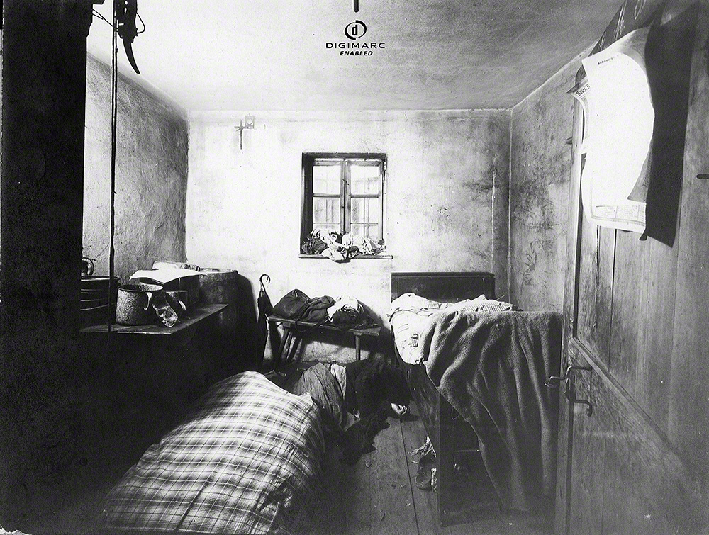

The Hinterkaifeck
Bavaria, Germany — March 1922

The Event
Six inhabitants of a small Bavarian farmstead were murdered with a mattock. Most chillingly, evidence suggests the killer lived on the farm for several days *after* the murders—feeding the cattle and eating the family's food—before disappearing forever. No motive was ever established, and no suspect was ever charged.
Evidence Locker
Current Theories
- Personal Vendetta (Lorenz Schlittenbauer): This particular individual was heavily invovled in the family, with personal gripes and issues with the family in regards to a child named josef and child support, and in later reports she has been part of the party to find the bodies, with wittnesses saying she showed now shock, and even moved the bodies, however not enough evidence was brought to light for a conviction
- The "Returning Soldier" theory: This theory was reovled around a man named karl gabriel, which at first was presumed to have died in franc in 1914, a cnspiracy had arisen claiming that he did not die in world war 2, and when making back to the family home, karl would ave found his wife giving birth to a child that wasnt his, which would drive him into a manic state killoing the bloodline. and from other soldiers in the russian forntlines has claimed to have met a man who claimed responsiblity for the killings, however not enough evidence was found to launch a full inestigation
- Botched robbery by a local drifter: Antoher theory suggests that these murders was the work of a local drifter that has attempted to do a robbery, or at least to some investigators, with reports claiming that the drifter had hid in the attic and would have lured each member of the family up to be disposed of, however this theory would be weak as in this instance, many of the familes riches would be left untouched, as well as the house being seemingl used for days after the intial killings took place.